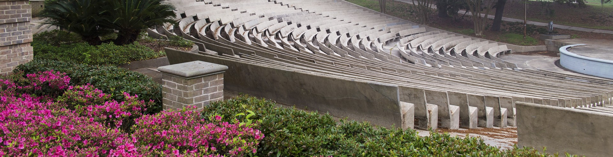

Our paper on the Agrosense AI-enabled orchard monitoring system was published in Precision Agriculture, demonstrating 95% accuracy for tree trunk detection, 94% for canopy density classification, and a 515% speed improvement over manual phenotyping methods across 157 citrus trees.
Collaborative work on AI-driven time series analysis for predicting strawberry weekly yields was published in Computers and Electronics in Agriculture, integrating fruit monitoring and weather data for optimized harvest planning.
Dr. Zhou's research on AI-powered pest detection and his role in advancing precision agriculture in Louisiana was featured in a comprehensive article by the LSU AgCenter on precision and digital agriculture initiatives.
Dr. Zhou was featured in an introductory article by the Southern Region Small Fruit Consortium, detailing his research on precision agriculture, AI-based pest detection tools, and his vision for technology-driven small fruit crop management.
The LSU AgCenter published a feature article on Dr. Zhou's background, his journey from rural China to precision agriculture research, and his plans for developing new AI-powered tools for Louisiana's agricultural producers.
Dr. Congliang Zhou joined the LSU Agricultural Center as an Assistant Professor in the School of Plant, Environmental and Soil Sciences, focusing on precision agriculture research and extension for Louisiana producers.